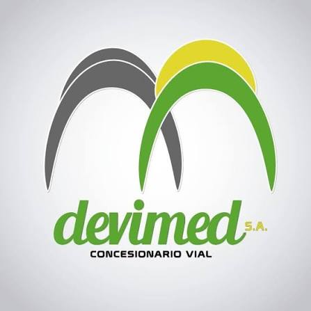
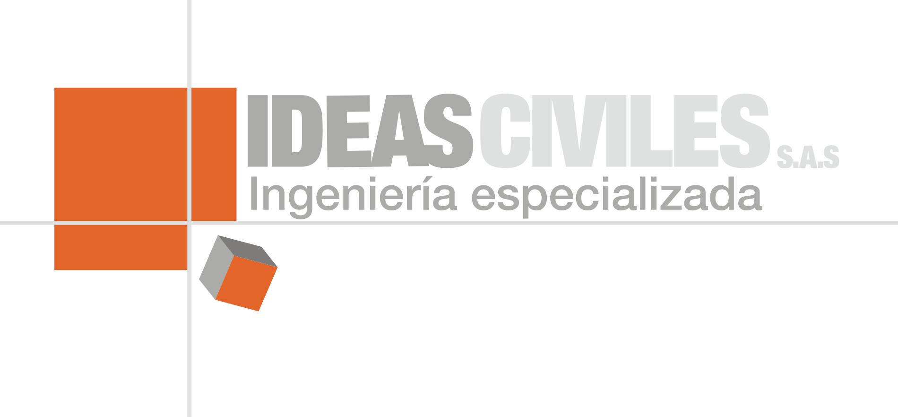
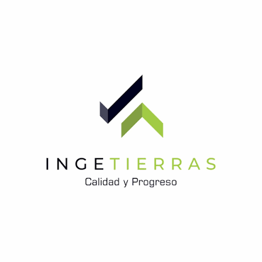
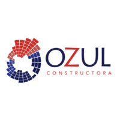

Infraestructura vial
Devimed S.A.
Apoyo topográfico para proyectos de infraestructura y control técnico en campo.

Portafolio de proyectos
Seguimos trabajando en esta sección para ofrecer un portafolio de proyectos mucho más completo. Muy pronto encontrarás más trabajos realizados por nuestro equipo.

Apoyo topográfico para proyectos de infraestructura y control técnico en campo.

Servicios topográficos para planificación, medición y seguimiento de obras civiles.

Información precisa para análisis territorial, levantamientos y gestión predial.
Medición técnica de terrenos para decisiones de diseño, construcción y trámite.

Replanteo y control topográfico para apoyar la ejecución eficiente de obra.
Soporte técnico para actualización de áreas, ubicación y levantamiento en campo.
Acompañamiento con información topográfica confiable para proyectos especializados.

Levantamientos y soporte técnico adaptados a las necesidades de cada proyecto.